Work / CARS24
 CARS24 · 2024–25 · Colour, Tokens, Architecture
CARS24 · 2024–25 · Colour, Tokens, ArchitectureOne colour system for 10+ products in three countries
CARS24 grew from one product to more than six, across three countries, in about three years, and its design didn't keep up. One blue lived in the code as five different values. We gave every team one palette and one set of design tokens, and that palette became the colour of the CARS24 rebrand.
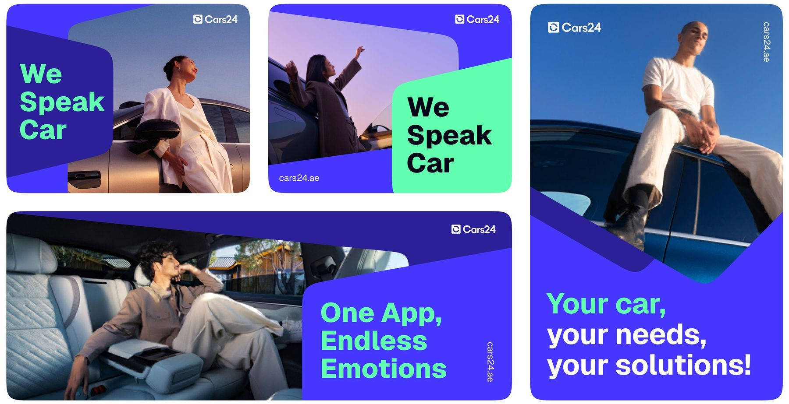
The 30-second version
The problem
Six products, three countries, no shared foundations. The same blue existed as five codes and every team rebuilt the basics.
What we did
A new palette specified in OKLCH, contrast-checked at every step, and a four-layer token architecture with a theme for each business.
What changed
Handoff got 65% faster, five button builds became one, and the rebrand rolled out 60% faster across three countries.
- 65%
- faster design-to-development handoff
- 5 → 1
- button implementations merged into one
- 10+
- product lines on one token system
- ~$156k
- estimated yearly engineering savings
A company that grew faster than its design
In three years CARS24 went from one used-car marketplace to a family of products in India, the UAE and Australia. Teams grew faster still.
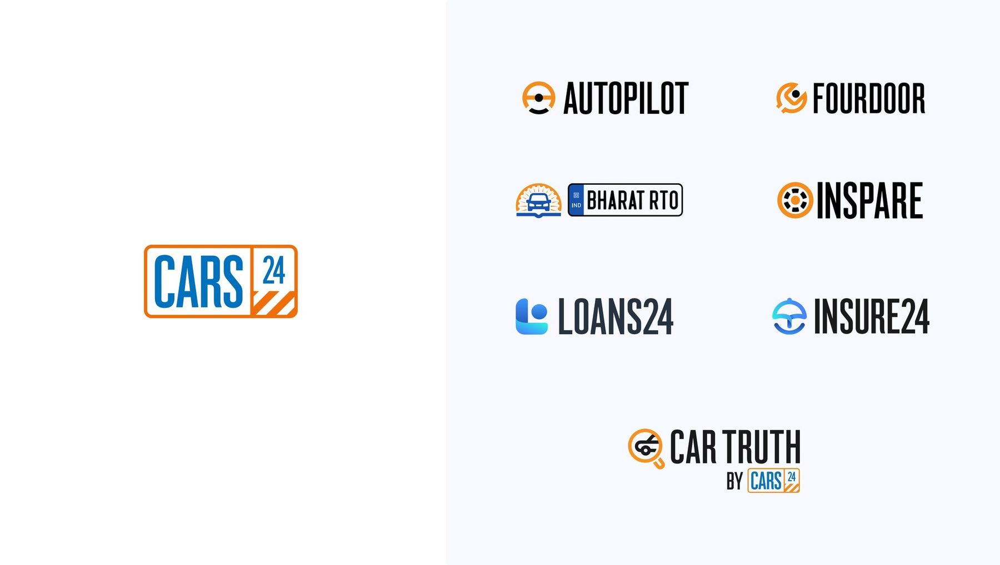
Five codes for one colour
There was no central home for colour, type or spacing. Designers copied colours from old screens, developers copied them again in code.
#0059A3seller-app/colors.ts#005AA5loans/theme.js#0058A1buyer-web/_vars.scss#0A5BA4uae/styles.css#0059A4new-cars/tokens.jsoncolor-brand-primaryOne token. Every product reads it.An illustration of the audit finding: one blue, five codes.
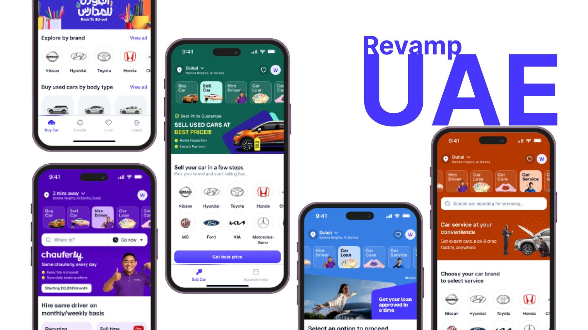
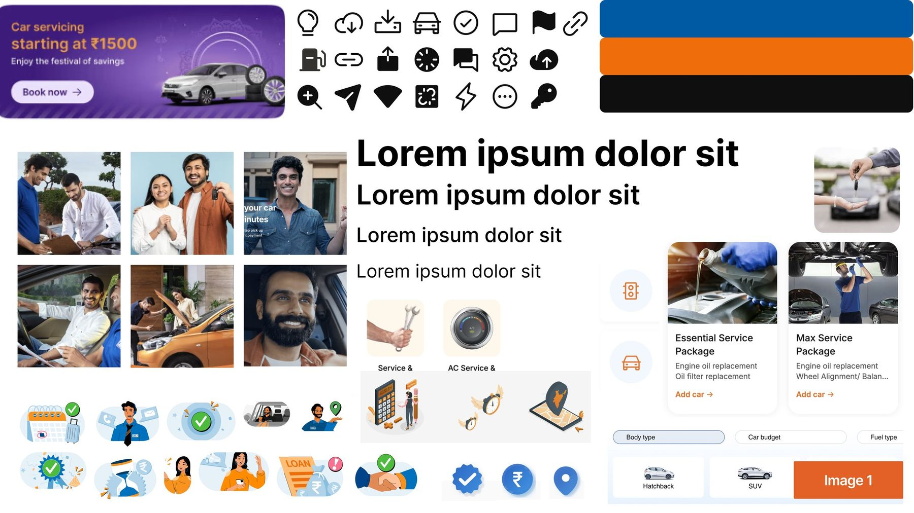
Read the detail
Every team kept its own styles, so buttons, inputs, alerts and tabs looked different from product to product. Nothing was documented, and many designers worried a system would box them in.
With no shared UI code each team rebuilt the same values; handoffs broke and the same bugs came back. India, the UAE and Australia each had their own design language, and new products launched with styles of their own. With an average tenure of six to seven months, context kept walking out the door.
Listening before changing anything
We interviewed stakeholders, sat in on rituals and audited how styles were really used. Then we put design, engineering, brand, marketing and product in one room.
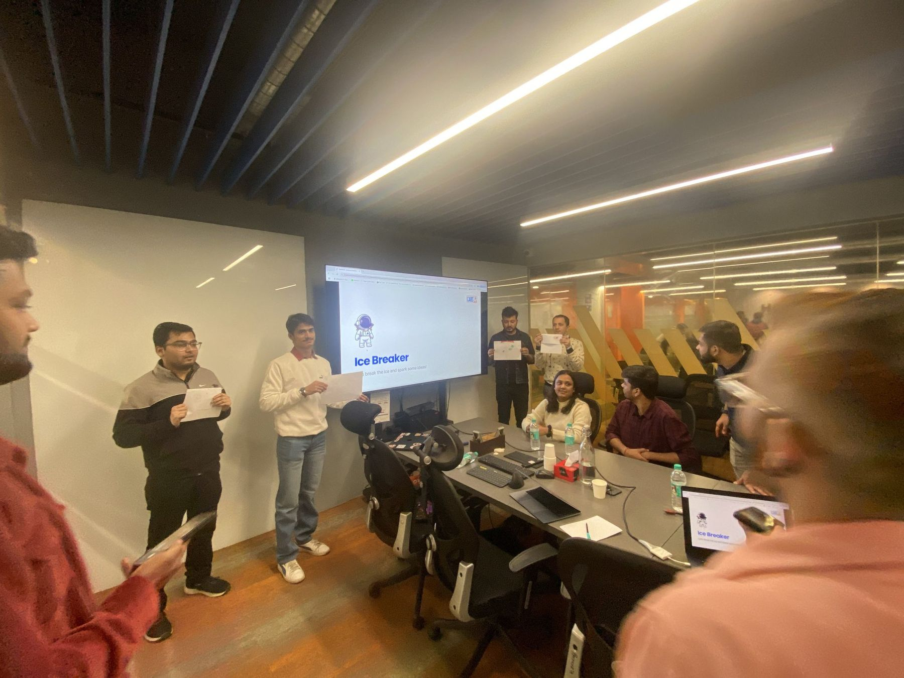
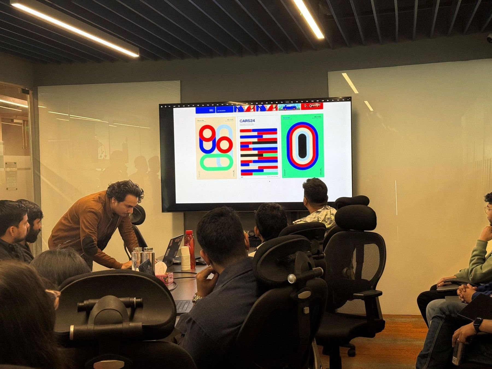
Read the detail
The existing setup was closer to a starter template than a system. Before touching it, we learned how teams were organised, where they got stuck, and where the business was heading over the next six to twelve months, including a rebrand.
Everything from the workshops went onto one board, where we grouped it into themes and ranked what to fix first. The same problems kept coming up: screens built differently from how they were designed, values nobody could reuse, an outdated palette, and no shared vocabulary.
An electric blue that works everywhere
The old palette failed basic contrast checks and couldn't stretch across products. We moved to an electric #4736FE, matched against Pantone cards so it prints true, and chose mint as its partner after testing three on the same layouts.

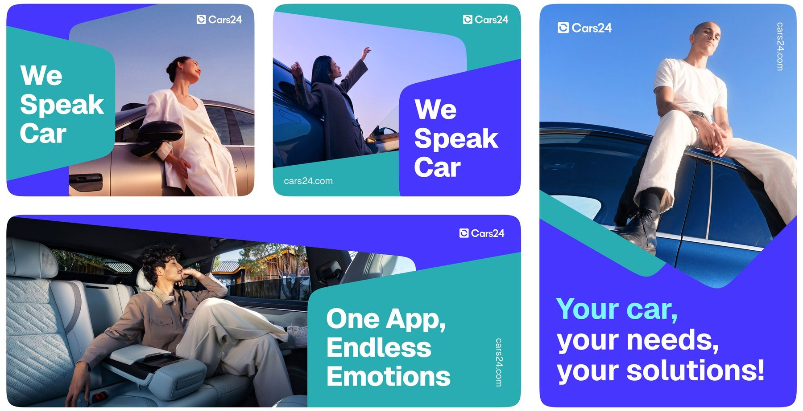
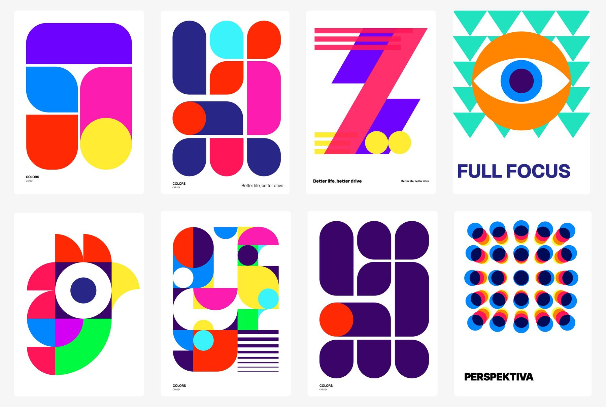
Read the detail
A design system team doesn't change a brand colour on its own. With other designers we built a deck that showed the accessibility failures, how dated the visuals felt, and what designers had told us in interviews. We took it to the Head of Design, and leadership agreed to a full overhaul.
We split the palette in two: a calm set for product UI, and a bright set marketing can use for campaigns without it leaking into the product.
Describing colour the way people see it
HEX and RGB tell a screen how much red, green and blue to mix, not how bright a colour looks. OKLCH's lightness follows human perception, so even ramps and predictable contrast come for free. Both comparisons below are rendered live by your browser.
Brand blue → orange, mixed in sRGB
The same two colours, mixed in OKLCH
Six hues at HSL 50% lightness
Six hues at OKLCH 70% lightness
Every core colour got a ten-step ramp, each step checked against WCAG. Select a step to see its contrast.
color-blue-500#4736FEFour layers between a hex code and a button
We studied Polaris, Lightning, Carbon and Material; none fitted one company with three countries and several businesses. So we built our own, starting with colour.
Value
#4736FEA raw colour. Nobody uses these directly.
Primitive
color-blue-500Names a value and gives it a place in a scale.
Semantic
color-action-primaryNames the purpose. Themes and dark mode swap here.
Component
button-background-primaryScoped to one component, tunable on its own.
color-blue-500 · color-mint-300color-action-primarycolor-surface-accentbutton-background-primarybadge-background-restSell your car in a few steps
Switch the brand. Only the primitive values change; every component picks them up through its semantic tokens.
Read the detail
The most common question in reviews was whether something should be a new semantic token. Too many and nobody can find the right one; too few and teams hard-code values. Two rules settled it: make it semantic when it's shared by several components, is about intent rather than colour, and is likely to change between themes. Keep it a component token when it's specific to one component.
Names were where teams disagreed most. One file had primaryBtnBg, another blue-button-new, and both meant the same thing. We agreed one grammar with parts in a fixed order, and wrote documentation and onboarding so any team could extend it.
One system, many products
Everything sits on one base. Each country and business adds a theme that overrides only what it needs, with its name at the front of its tokens. Teams plug in at three levels: core, a pattern library per vertical, and shared libraries for verticals that look alike.
Base system, India theme
Base tokens and components. Every other theme is an extended Figma file and code package.
Australia
au tokens and components override only what they must.
Loans (NBFC)
nbfc-prefixed tokens, so an override is easy to spot in review.
UAE
uae tokens and components, Arabic-ready.
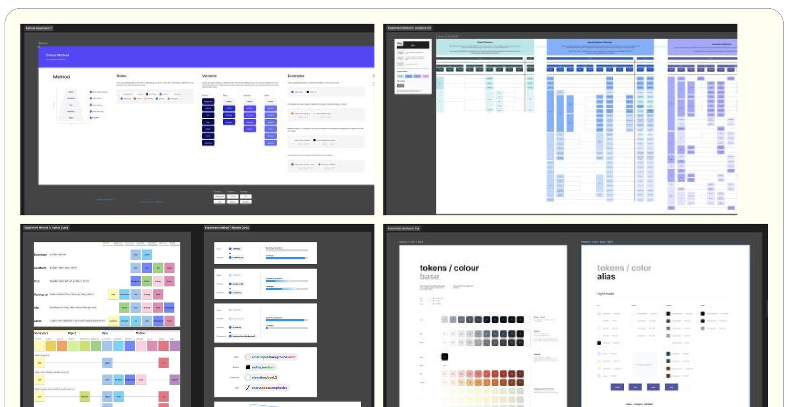
What one colour change costs
Say a colour is used in a thousand places and needs to change. Move the sliders: the token version is always one change.
99.9% less time on every colour change
Speed
65% faster handoff. Five button builds became one shared component.
Money
About $156k a year in engineering time, estimated. Rebrand rolled out 60% faster.
Scale
Every Figma token maps one-to-one to code, across 10+ product lines in 3 countries.
Culture
Joint design and engineering reviews became a habit, not an exception.
What we'd tell ourselves at the start
Short version: tie it to the business, measure more than adoption, and show rather than tell.
Tie it to business goals
A system earns support when it clearly helps what the company is trying to do.
Measure more than adoption
Time saved, cost avoided and quality gained tell a better story than usage.
Show, don't tell
Demos and regular rituals changed more minds than any document.
Governance keeps it alive
Clear ownership and a clear token structure stop a system drifting again.
From the files
Select any image to see it full size.
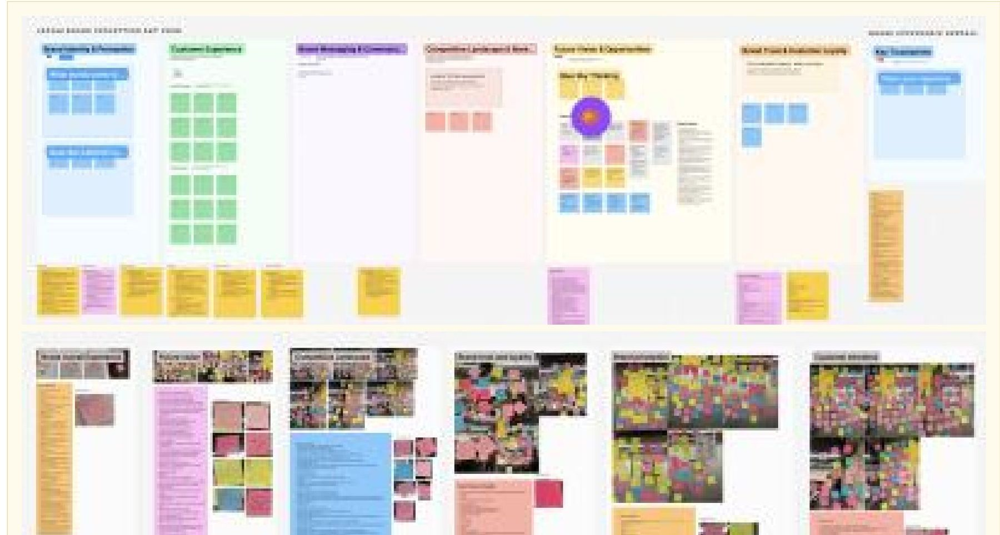
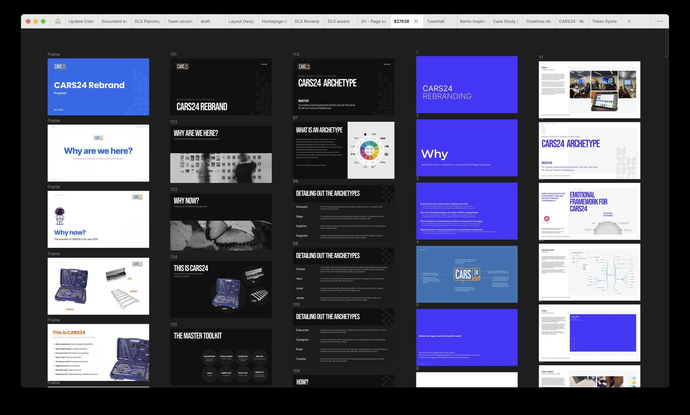
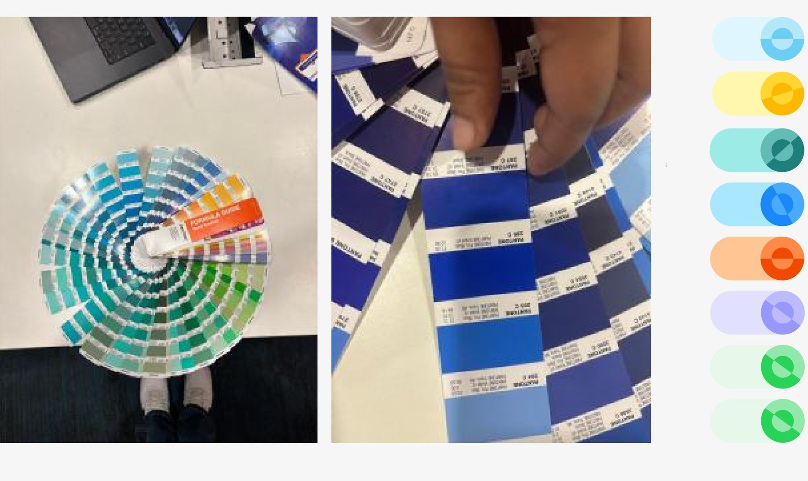
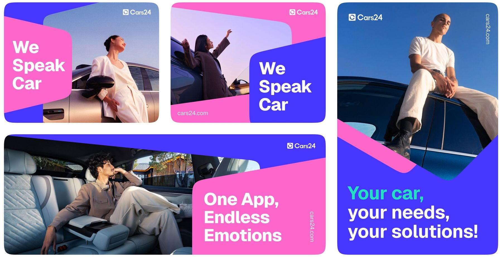
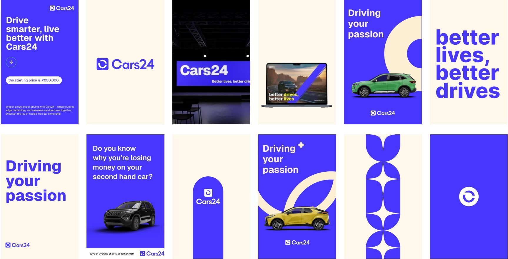
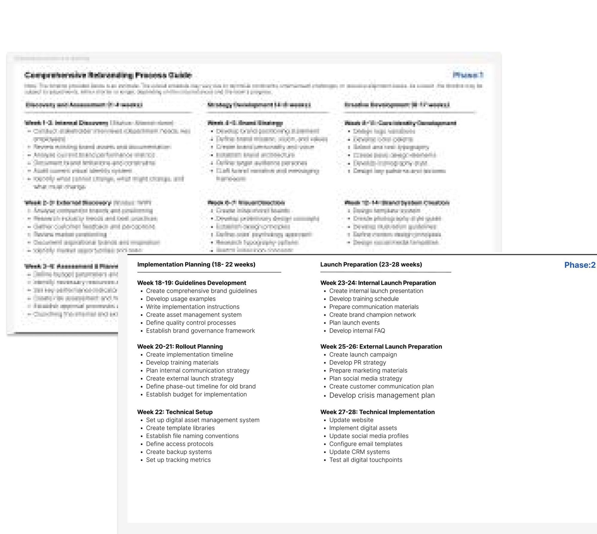
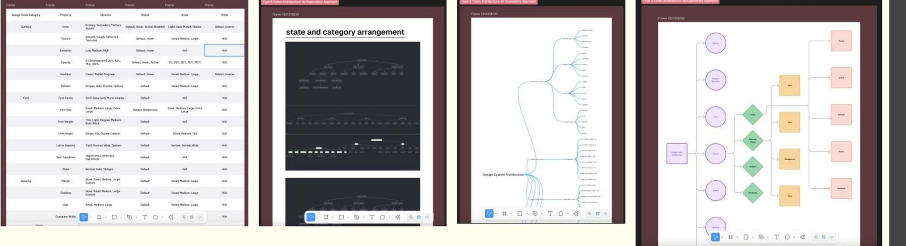
Led by Aniket Pandey as Design Systems Lead at CARS24, with Vibhu (design) and Priyesh, Harish and Piyush (engineering), and CARS24's brand and product teams. Images belong to CARS24 and are shown for portfolio purposes.
Need this for your product?
We do this work for product teams now. Start with a two-week audit.